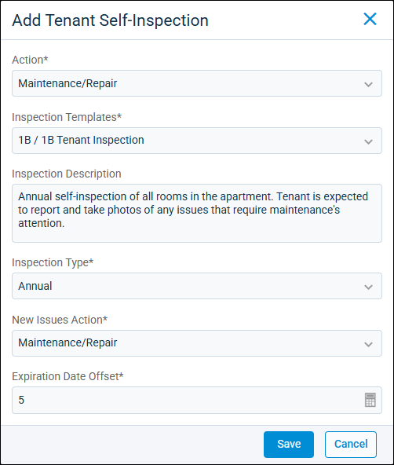

Source: https://rmxhelp.rentmanager.com/Topics/Express/CSH/Make-Ready-Inspection-Tenant.htm
Add a Tenant Self-Inspection (Pop-Up)
The Make Ready page helps streamline the process of preparing vacant units for occupancy and provides an up-to-date visual representation of the unit turnover process. If you want tenants to complete their own inspection using rmResident as part of a make-ready process, you can create and send self-inspections that can be associated with any stage of the make ready process.
Related Privileges
| Group | Privilege | Column |
|---|---|---|
| Properties/Units | Make ready board | View |
| Inspections | Inspections | Add |
| Send Tenant Self-Inspections | Enabled |
For more information, refer to Control User Access.
To add a tenant self-inspection to a make-ready board process go to  arrow_forward Services arrow_forward Make Ready arrow_forward Make Ready Board. Then, on the desired process, click
arrow_forward Services arrow_forward Make Ready arrow_forward Make Ready Board. Then, on the desired process, click  arrow_forward Add Tenant Self-Inspection.
arrow_forward Add Tenant Self-Inspection.

Field Descriptions
The following fields are available on this pop-up.
| Field | Description |
|---|---|
|
Action |
The name of the action that needs to take place through the make-ready process being addressed by the tenant self-inspection (e.g., Check for damages). |
|
Expiration Date Offset |
The number of days from the inspection date that the tenant can no longer access or submit the self-inspection in rmResident. For example, if you enter 5 and the inspection is created with 10/16/2026 as the start date, the Expiration date on the inspection is automatically set to 10/21/2026. |
|
Inspection Description |
More detailed information regarding the inspection being performed for internal reference. |
|
Inspection Templates |
The inspection form template to use for this self-inspection. To automatically use the inspection template selected on the associated unit's details page in the Inspection Template field, select <Unit Default>. |
|
Inspection Type |
The type of self-inspection being performed (e.g., Move Out). |
|
New Issues Action |
The make-ready action to which any new service issues that were created as part of this self-inspection are assigned. Alternatively, if you do not want to link any issue(s) created from a make-ready self-inspection, select <Exclude from Make Ready>. |